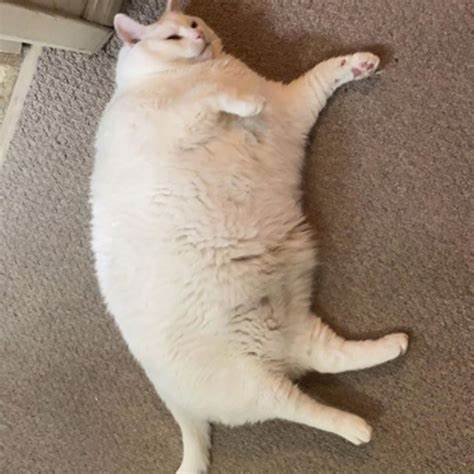

Obesidad en gatos |
||
|---|---|---|
|  | Mantenga un ojo en el peso del gato es fundamental para el bienestar de nuestro amigo de cuatro patas a corto y largo plazo: el peso ideal de hecho, es uno de los factores que mantienen a los gatos en forma y les ayudan a vivir una vida larga y saludable. | Las últimas estadísticas, lamentablemente, hablan de un número creciente de sujetos en exceso de peso o sufriendo de obesidad entre los gatos domésticos Italianos y más: el gato se encuentra entre las mascotas con mayor riesgo en cuanto a problemas relacionados con superar el peso ideal |
| Dependiendo de la raza, de hecho, los gatos pueden crecer con dimensiones más o menos masivas y, por tanto, tendrán un peso diferente. Además, un gatito y un gato mayor seguramente tendrán un peso ideal diferente al de un gato adulto. | ||
Términos: